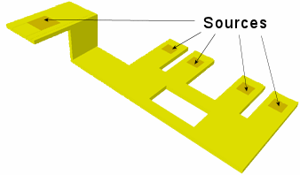

The following
procedure uses geometry data from imported files, but power is determined
from Potential Sources attached to PCB layers.
Restrictions and Limitations
Procedure
- Add a Power Map as described
in “Modeling Joule Heating From Power Map Geometry and Power Data”, but do not solve the model.
- Switch on Joule Heating at
the Model Setup tab.
- Add Source SmartParts to the
Power Map Layers and/or Vias. Typically these will used to set fixed
voltages and current sources and sinks at the ends of tracks.
Tip If you
select a Power Map Layer or Via before adding a Source SmartPart,
then the Source dimensions will match the bounding box dimensions of
the selected object. The Source SmartPart can then be resized.
Figure 1. Sources on Power Map Layers
- Define Potential Source attributes
as necessary and attach these to the Source SmartParts. See Source Attributes in the Simcenter Flotherm Project Attributes
Reference Guide.
- Check that the correct Electrical
Resistivity values are defined. The default Material attribute attached
to Power Maps is Copper (Pure).
- Run a sanity check to ensure
the Sources are adequately defined and that there is electrical
connectivity between them.
- Solve the model.